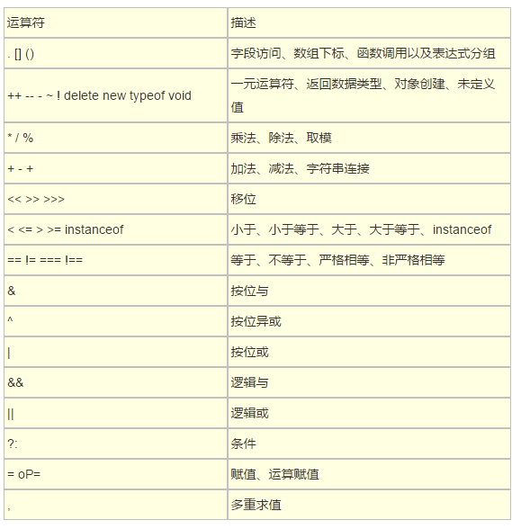
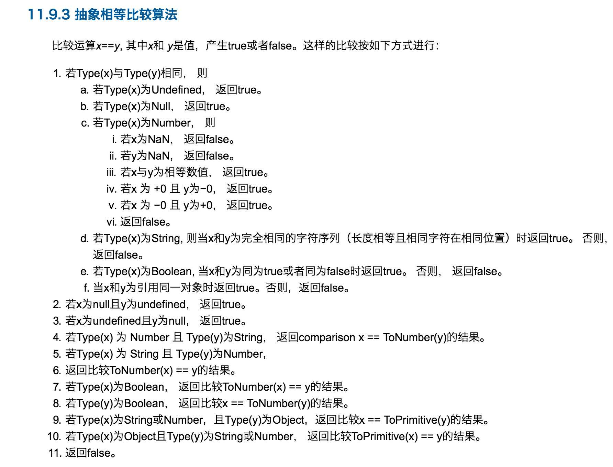

JS部分
#1
eval直接在函数内部使用则返回的是局部变量
利用window.eval（）使其成为全局的
该函数是立即执行函数，a是var变量声明，所以是局部变量，但是这里的b其实是全局变量；
#2
|
函数在定义时（不是调用），就已经确定了函数体内部自由变量的作用域。
什么是自由变量?
在A作用域中使用的变量x,却没有在A作用域中声明(即在其他作用域中声明的),对于A作用域来说,x就是一个自由变量。
#3
|
答案是。。。都是true。知道答案了，当然还要知道为什么。。。
第一道
首先[]==[]这个的结果是啥？？？false，纳尼！！！因为数组是引用类型。。。
做这道题先要知道运算符的优先级

可以看到!的优先级高于==的优先级，所以先计算![]
①![]很明显要转Boolean,对象转布尔值，[]转成true然后取反，所以是false。
② 接下来就是==的运算

看第8条,当type(y)是Boolean时 x==ToNumber(y);所以是[]==ToNumber(false)即[]==0
再看第10条，即ToPrimitive([])==0,这个ToPrimitive()其实就是之前讲的对象转化，这里就是对象转Number
所以规则是
- 如果 valueOf 方法存在并且返回原始类型，返回 valueOf 的结果。
- 如果 valueOf 方法不存在或者返回的不是原始类型，调用 toString 方法，如果 toString 方法存在，并且返回原始类型数据，返回 toString 的结果。
- 其他情况，抛出错误。
最后ToPrimitive([])=’’也就是空字符串，变成""==0;
再看第5条,就是说ToNumber(“”)==0,空字符串ToNumber()会转成+0，
so。。。结果明显了吧+0==0->true第二道
看第10条规则，所以是ToPrimitive([])=='',上面讲了ToPrimitive([])=’’也就是空字符串所以就是''==''当然是true啦